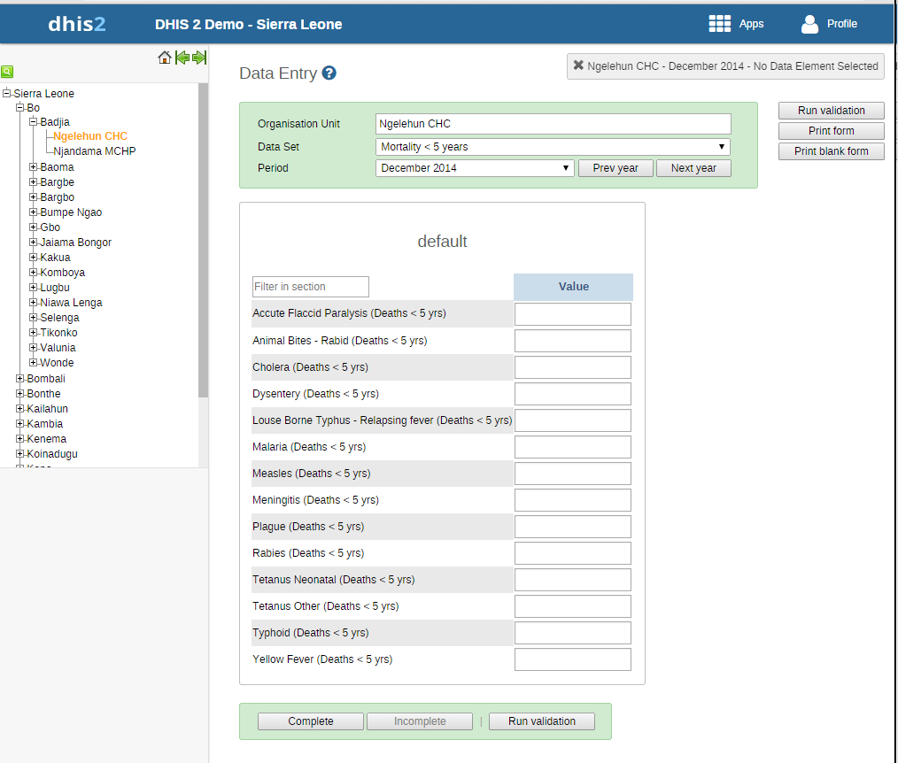

|  |
-
Open the Data Entry app.
-
In the organisation unit tree to the left, select an organisation unit.
-
Select a Data set.
-
Select a Period.
The available periods are controlled by the period type of the data set (reporting frequency). You can jump a year back or forward by clicking Prev year or Next year.
![[Note]](../Resources/note.png)
Note Depending on how you've configured the data entry form, you might have to enter additional information before you can open the date entry form. This can for example be a project derived from a category combination.
-
Enter data in the data entry form.
-
A green field means that the system has saved the value.
-
A grey field means that the field is disabled and you can't enter a value. The cursor will automatically jump to the next open field.
-
To move to the next field, press the Tab key or the Down Arrow key.
-
To move back to the previous field, press Shift+Tab or the Up Arrow key.
-
If you type in an invalid value, for example a character in a field that only accepts numeric values, you'll get a pop-up that explains the problem and the field will be coloured yellow (not saved) until you have corrected the value.
-
If you have defined a minimum maximum value range for the field and you enter a value that is outside this range, you'll get a pop-up message that says the value is out of range. The value remains unsaved until you've changed the value or updated the value range and then re-entered the value.
-
-
When you've filled in the form, click Run validation in the top right corner or below the data entry form.
All validation rules which involves data elements in the current data entry form (data set) are then run against the new data. If there are no violations of the validation rules, you'll see a message saying The data entry screen successfully passed validation. If there are validation violations, they will be presented in a list.

-
(Optional) Correct validation violations.
Note Zero (0) will delete the value if the data element has been configured to not store zeros.
-
When you've corrected errors and you're done with data entry, click Complete.
The system uses this information when generating completeness reports for district, county, province or the national level.